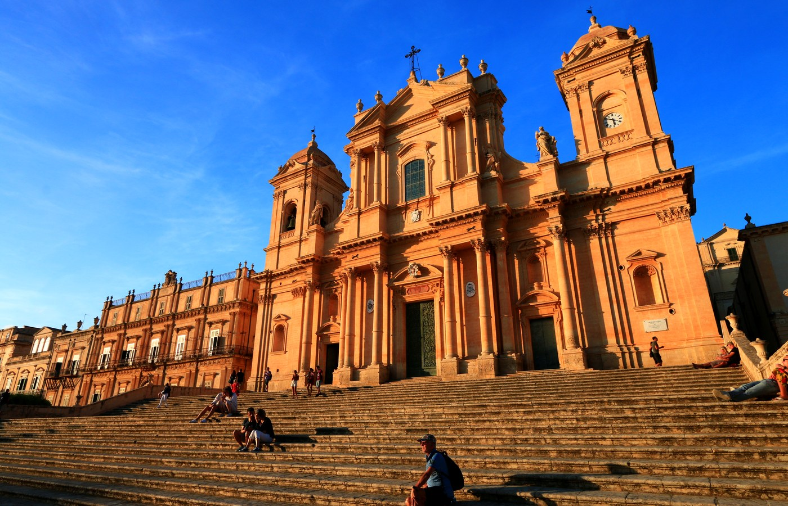
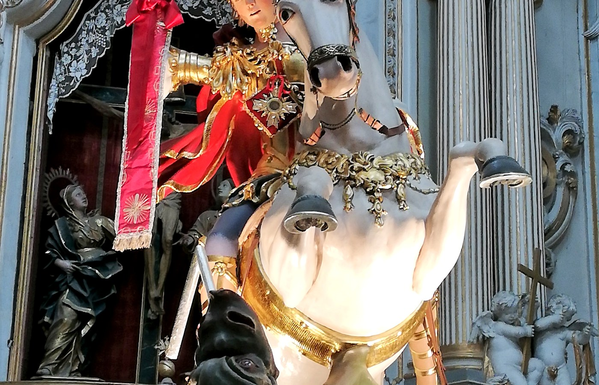
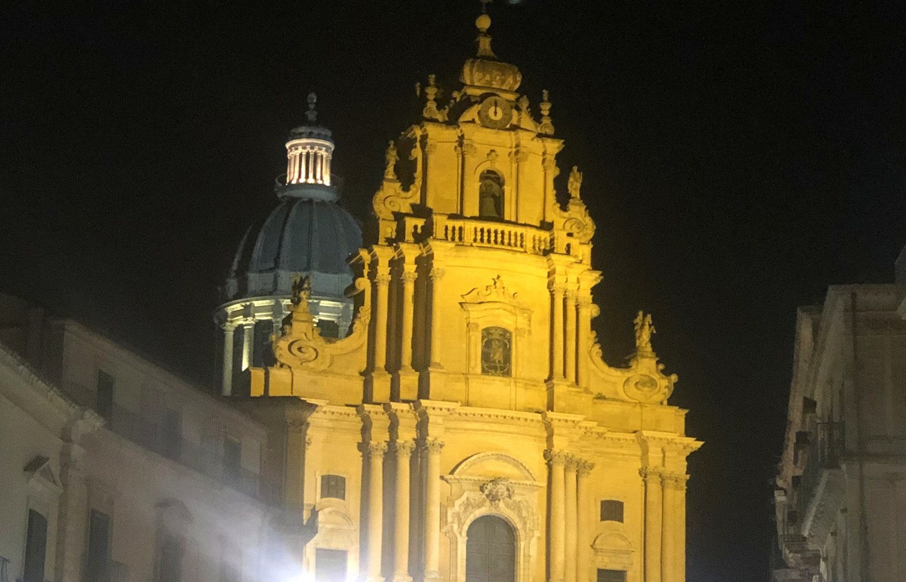
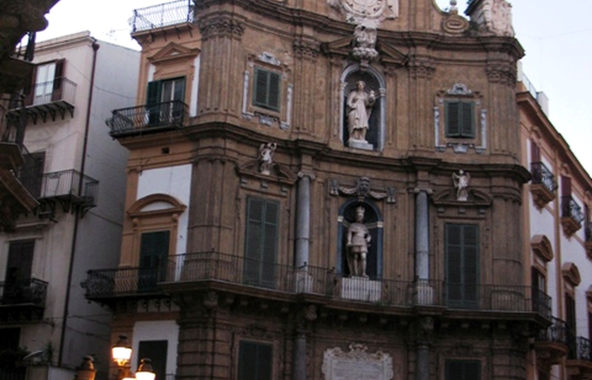

Piazza del Duomo
Scenografia urbana in pietra chiara: cattedrale e palazzi civici definiscono un grande “teatro” barocco.
Una selezione di quattro luoghi simbolo, utili per orientarsi tra architettura, storia urbana e punti di interesse. Ogni scheda propone cosa osservare e consigli di visita.

Quattro tappe principali, con accesso diretto alle schede.
Scenografia urbana in pietra chiara: cattedrale e palazzi civici definiscono un grande “teatro” barocco.

Spazio urbano legato alla basilica e alla topografia: la scalinata guida lo sguardo e il percorso.


Incrocio monumentale con facciate barocche simmetriche: un caso esemplare di scenografia urbana.
Esempi visivi: prospettive, facciate e luce in diverse ore del giorno.

Pietra chiara e ombre nette: osserva cornici, capitelli e balconate.

La topografia costruisce la scena: cambiano proporzioni e punti di vista.

Sequenze di slarghi e percorsi: la piazza si scopre a piccoli passi.

Simmetria e assi: un punto chiave per leggere il centro storico.